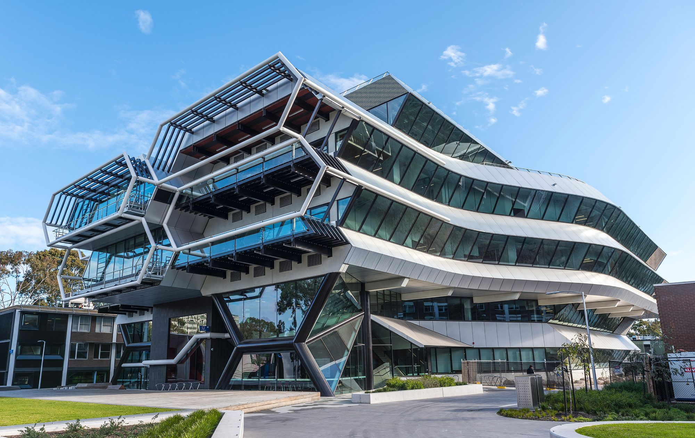
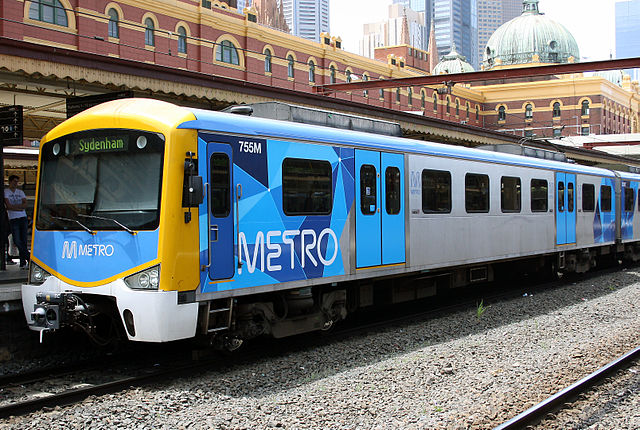
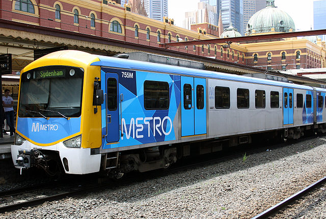

Monash In General
Clayton Campus
address: *Kasih pictureClayton is the largest of Monash University's campuses. More than 24,000 students study in the 8 faculties represented here (Arts, Business and Economics, Engineering, IT, Law, Medicine, Nursing and Health Sciences & Science).
jelaskan daerah2 gedung penting (library [sir louis mattheson, hargrave-andrew, law], student area, campus centre, study space, tempt parkir, sport area). → gimana ya jelasinnya
How to get to Monash University Clayton Campus?
• Bike/Skateboard/Walk• Drive (kasi map)
• Train: Pakenham/Cranbourne/Westall line
(stop at Huntingdale station, then take the shuttle bus 601 to Monash University Clayton Campus) + approx berapa menit
• Bus:
802 | 804 Dandenong,
862 Chadstone Dandenong,
802 | 804 Chadstone, 900 Rowville,
703 Blackburn, 703 Middle Brighton,
733 Oakleigh,
733 Boxhill,
737 Croydon,
631 Southland,
601 Huntingdale (shuttle bus),
900 Caulfield,
630 Elwood, Caulfield, Berwick & Peninsula inter-campus shuttle bus.



(source:http://www.monash.edu/__data/assets/pdf_file/0006/573972/17P-0112-T2-ClaytonBusInterchangeMap_A4_web.pdf)
Caulfield Campus
address: Kasih pictureCaulfield campus is Monash University's second largest campus, offering a diverse range of education opportunities. The campus has five faculties and a number of undergraduate, postgraduate, and research programs: (Arts, Art, Design and Architecture, Business and Economics, IT & Medicine, Nursing and Health Sciences).
How to get to Monash University Caulfield Campus?
Bike/Skateboard/WalkDrive (kasi map)
Train: Pakenham/Cranbourne/Westall/ Frankston line to Caulfield station
Bus: 900 Caulfield, 624???